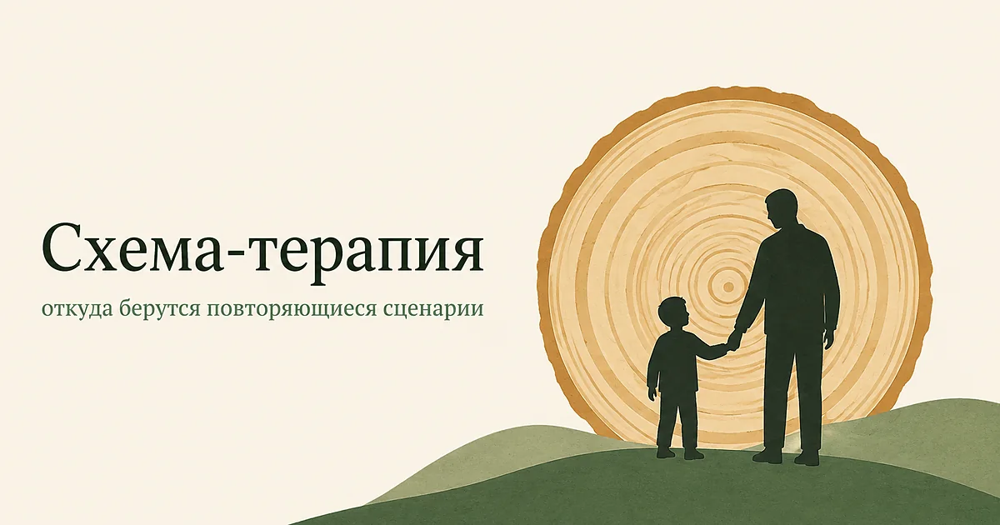

Главная → Подходы → Схема-терапия
Схема-терапия
Обновлено: 10.08.2026 · 7 минут чтения
Схема-терапия отвечает на вопрос, который остаётся за рамками классической КПТ: почему одни и те же сценарии повторяются в жизни человека десятилетиями. Подход объединяет когнитивную терапию с работой над ранним опытом и привязанностью, и создавался как раз для тех случаев, где короткие методы буксуют — при устойчивых чертах характера и хронических трудностях в отношениях.

Что такое схема-терапия
Метод разработал Джеффри Янг в 1990-х, столкнувшись с ограничением классической КПТ: она хорошо снимала симптом, но часть людей возвращалась с той же проблемой в новой обёртке. Человек уходил от одного холодного партнёра и через год оказывался рядом с другим. Симптом лечился, сценарий — нет.
Янг предположил, что за этим стоят схемы — устойчивые представления о себе, других и мире, сложившиеся в детстве, когда какие-то базовые потребности не были удовлетворены. Ребёнку нужны надёжная привязанность, принятие, границы, свобода выражать чувства и спонтанность. Если чего-то системно не хватало, формируется убеждение, которое во взрослом возрасте продолжает работать автоматически.
Ранние дезадаптивные схемы
Всего в подходе описано восемнадцать схем, объединённых в пять групп. Вот те, что встречаются чаще всего:
- Покинутость — «близкие рано или поздно уйдут». Отсюда ревность, потребность в постоянных подтверждениях, паника при паузе в переписке.
- Дефективность и стыд — «если меня узнают по-настоящему, отвернутся». Отсюда закрытость и болезненная реакция на критику.
- Эмоциональная депривация — «мои потребности всё равно никого не интересуют». Человек просто перестаёт просить, а потом злится, что не догадались.
- Подчинение — «мои желания не важны, главное не расстраивать других». Прямая дорога к токсичным отношениям и накопленной злости.
- Жёсткие стандарты — «расслабляться нельзя, надо быть безупречным». Частая причина выгорания и синдрома самозванца.
- Недоверие — «люди используют, если дать слабину». Постоянная настороженность даже в безопасных отношениях.
Схема — это не диагноз и не приговор. Это привычка восприятия, которая когда-то была разумным способом выжить в конкретной семье, а потом осталась работать там, где уже мешает.
Режимы: почему человек меняется на глазах
Вторая ключевая идея подхода — режимы, то есть состояния, в которые человек переключается. Именно они объясняют, почему взрослый и рассудительный человек в ссоре вдруг реагирует как обиженный ребёнок, а через минуту — как собственный отчитывающий родитель.
Условно режимы делятся на детские (уязвимый, сердитый, импульсивный ребёнок), копинговые (капитуляция, избегание, гиперкомпенсация — то есть подчиниться, сбежать или нападать первым), родительские (требующий и наказывающий внутренние голоса) и здоровый взрослый. Задача терапии — усилить последний: научиться замечать переключение и отвечать уязвимой части иначе, чем это делали в детстве.
Отсюда особенность метода: терапевт здесь не нейтрален. Он занимает позицию, которую в подходе называют ограниченным родительством, — в безопасных профессиональных рамках даёт тот отклик, которого не хватило. Это одна из причин, почему схема-терапию трудно свести к набору упражнений.
При каких состояниях помогает
- повторяющиеся сценарии в отношениях — «опять то же самое, только с другим человеком»;
- пограничное расстройство личности: здесь у метода лучшая доказательная база, есть исследования с многолетним наблюдением;
- хроническая депрессия и тревога, которые вернулись после курса КПТ;
- стойкая низкая самооценка, не поддающаяся рациональным аргументам;
- последствия эмоционального пренебрежения и травматичного детского опыта;
- трудности с расставаниями и зависимые отношения.
Сколько длится
Это долгий метод, и об этом честно предупреждают на входе. Курс обычно занимает от года до двух при еженедельных встречах, а при работе с расстройствами личности — дольше. Причина в самой задаче: речь не о снятии симптома, а о перестройке того, как человек воспринимает себя и других, а это не делается за десять сессий.
Ограничения
Главные ограничения — время и деньги: длительная терапия доступна не всем, и это реальный барьер, а не придирка. Метод сложнее в освоении, поэтому квалифицированных схема-терапевтов заметно меньше, чем КПТ-специалистов.
Есть и содержательное ограничение: если запрос узкий и конкретный — например, страх летать или бессонница, — заходить с длительной работой над схемами избыточно. Для таких задач короткие протоколы КПТ эффективнее и быстрее.
Схема-терапия и AI Therapist
Наши психологи используют язык схем и режимов: помогают заметить повторяющийся сценарий, назвать внутреннего критика, отличить реакцию уязвимой части от взвешенного решения. Это полезно как первый шаг — увидеть узор часто важнее, чем сразу его менять.
Но именно здесь особенно важно сказать прямо: сердцевина схема-терапии — отношения с терапевтом, тот самый опыт другого отклика. Приложение его дать не может. Оно помогает разобраться в понятиях и заметить закономерность, а глубокая работа возможна только с живым специалистом.
Замечаете, что одна и та же история повторяется с разными людьми? Расскажите о ней — иногда узор виден со стороны быстрее.
Попробовать бесплатноЧастые вопросы
Что такое схема-терапия простыми словами?
Это подход, который объясняет, почему в жизни человека повторяются одни и те же сценарии. В основе — представление о схемах: устойчивых убеждениях о себе и других, сложившихся в детстве, когда базовые потребности не были удовлетворены. Терапия помогает заметить эти схемы и научиться отвечать на них иначе, а не просто снимает симптом.
Чем схема-терапия отличается от КПТ?
КПТ работает с текущими мыслями и поведением и занимает от 8 до 20 сессий. Схема-терапия идёт к истокам паттерна, использует работу с ранним опытом и отношения с терапевтом как инструмент, и длится от года. Её выбирают, когда проблема не в отдельном симптоме, а в повторяющемся жизненном сценарии.
Сколько длится схема-терапия?
Обычно от года до двух при еженедельных встречах, а при работе с расстройствами личности дольше. Это связано с самой задачей: подход меняет не отдельную мысль, а устойчивое представление о себе и других, и быстро это не делается.
Кому схема-терапия подходит хуже?
Если запрос узкий и конкретный — страх летать, бессонница, подготовка к экзамену, — длительная работа со схемами избыточна: короткие протоколы КПТ дадут результат быстрее. Также метод требует времени и денег на длительный курс, и это реальное ограничение доступности.
Материал подготовлен командой AI Therapist. Мы описываем подход в том виде, в каком он представлен в профессиональной литературе, и не обещаем результата. Страница носит просветительский характер и не заменяет консультацию специалиста.
Источники: Giesen-Bloo J. и соавт. «Outpatient psychotherapy for borderline personality disorder», Archives of General Psychiatry, 2006, American Psychological Association — Psychotherapy.
Кто отвечает за содержание сайта и по каким правилам мы готовим материалы — на странице о проекте.